Desktop release candidate acceptance / 2026-07-18
LocalMiniDrama 产品体验与发布验收
以实际桌面工作流为准，覆盖项目入口、AI 服务、素材、剧集就绪度、制作台、画布和自由创作。移动端、代码签名和外部真实 Provider 深度接入按已确认范围后置。
验收摘要
完整播放/下载流程：1440×900、1366×768；桌面专项：1280×720；AI 双列布局专项：1024×768
范围判断
本页描述桌面 Web、工作流、备份恢复和发布边界，但不把仓库内报告或截图解释为当前候选的机器验收结果。
移动端与 touch 重排、Authenticode 签名、外部真实 Provider 深度联调。未配置的视频与语音服务会在产品中明确阻断正式制作，并提供返回上下文完整的配置入口。
最终干净源码提交之后生成的生产 E2E、Docker、Windows 制品、安全扫描和离线校验必须绑定同一提交，并由 GitHub checks 与可下载 artifacts 提供权威记录。
产品与项目联合验收
发现问题先回开发修复，再重新进入测试与审计
产品经理：桌面体验说明
- 项目首页、紧凑就绪度、紧凑流水线、画布、素材中心和 AI 配置均有明确主任务与下一步；诊断详情不再抢占首屏。
- 缺少视频或 TTS 能力时，正式命令失败关闭，同时保留可带上下文返回的配置入口。
- 跨项目图片可以从素材中心挂载为分镜自由参考图或视频主参考图。
- 素材选择器已阻止旧请求覆盖新请求，加载、错误、空态和确认操作保持一致。
- 项目包导入失败改为持久页内反馈，提供安全文件名、可操作原因、重新选择和关闭入口。
- 素材选择器空态可直接清除筛选或前往素材中心上传，并通过受限返回地址回到原制作台。
- AI 配置把“服务状态”和“配置管理”分开，左右方向键同步迁移选中态与焦点；服务直达链接落在正确工作区。
- 历史手工检查与生产 E2E 仅作为桌面布局、中文路径媒体和播放流程的说明性上下文；当前结论必须由最终同一提交的 machine artifacts 重新给出。
项目经理：发布判断由机器证据承担
- 桌面范围、后置边界、发布失败条件和回滚责任由文档与自动化合同共同定义。
- 源码、Docker、生产 E2E、回滚和安全证据必须由最终干净提交重新生成；历史结果不能迁移为当前结论。
- GitHub CI 须将 Windows 制品、SBOM、秘密扫描和离线校验绑定同一远端提交；完成前不创建正式 Release。
- 任何同一提交门禁失败都回到开发阶段，不允许用本页或人工说明替代通过记录。
流程证据
以下 tracked 截图均为历史或说明性界面材料，不是最终同一提交的原始 viewport 机器证据

项目首页
说明性素材中心、分类素材、自由创作、回收站、AI 配置、导入和新建项目都在首屏；项目卡片使用键盘可达链接，操作菜单与进入项目分离。

AI 服务配置与模型
说明性五类服务状态、默认模型、连接测试和缺口集中展示；支持多厂商预设与 OpenAI 兼容协议。当前视频和语音未配置属于已确认的外部接入后置范围。
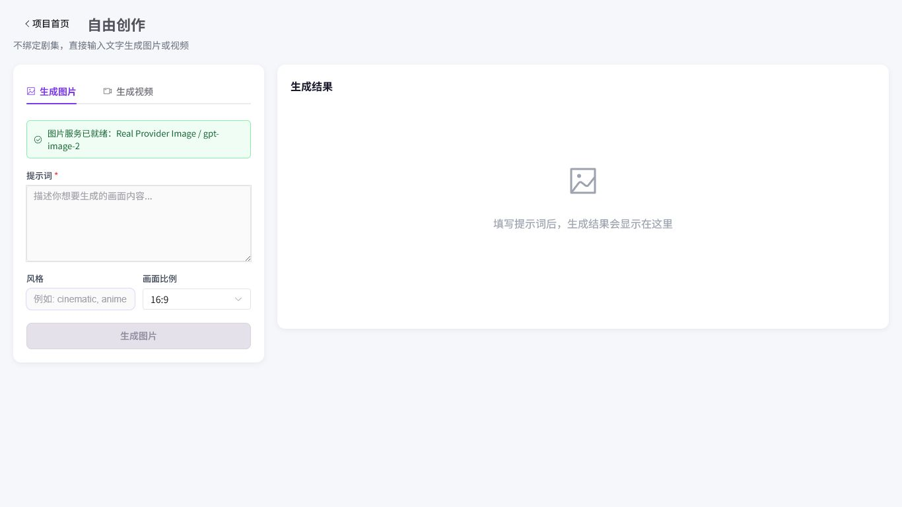
自由创作
说明性图片与视频模式分离，生成前显示服务和模型；不可用能力会禁用命令，并可带模式上下文返回 AI 配置。
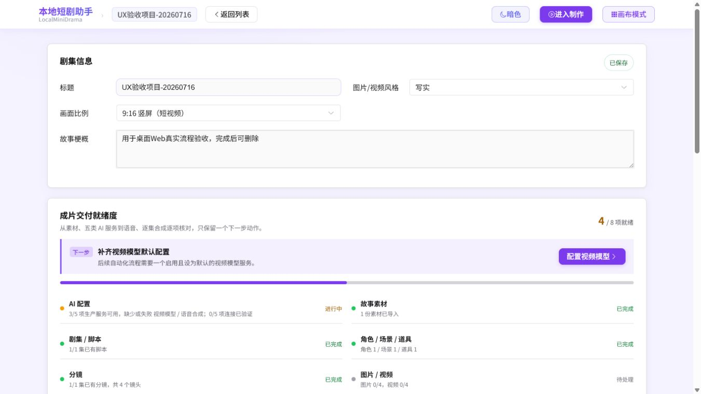
项目就绪度
说明性在 1366×768 下仍能看到下一步、就绪进度和分类状态；缺失的视频模型被明确定位，没有让用户进入无法完成的正式制作。

素材、QA 与时间线
说明性导入、处理、QA、修复和剧集时间线形成连续状态链；本轮修复了吸顶栏半透明导致滚动内容透出的视觉重叠。
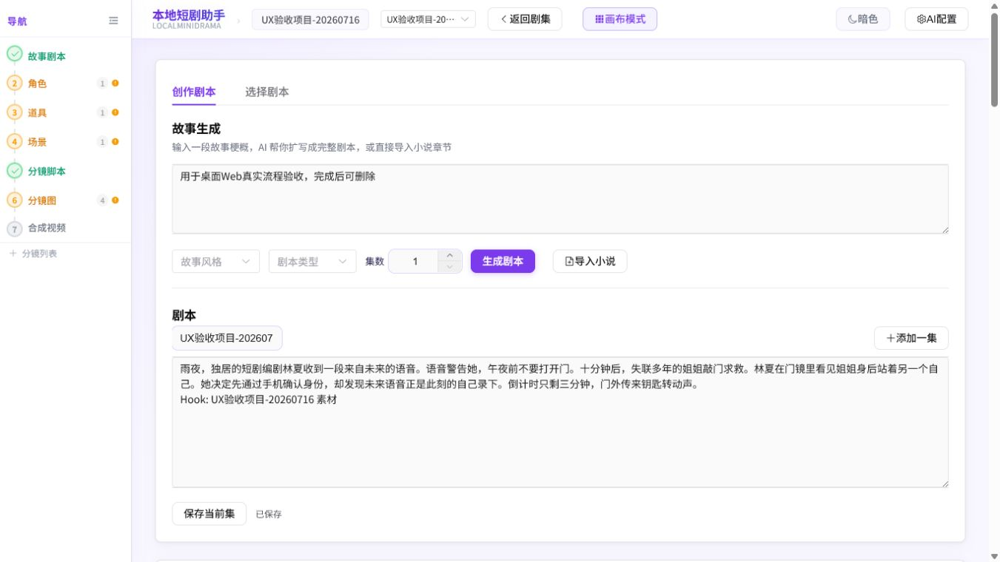
制作工作台
说明性七步生产导航固定在左侧，当前任务与资源数量可扫描；剧本、资产、分镜和合成命令保持在同一项目上下文。
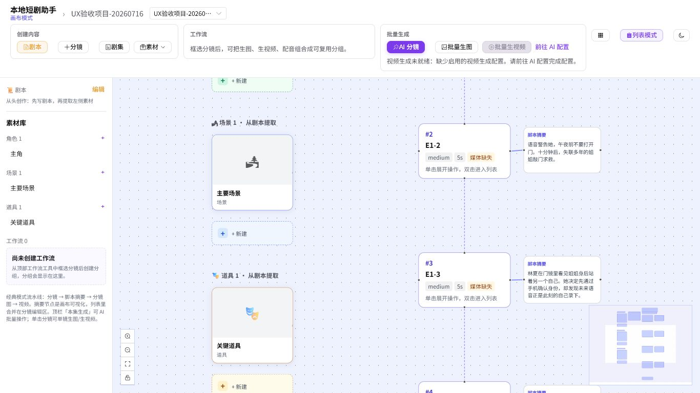
画布模式
说明性节点在最低可读缩放下保持清晰；批量命令按服务能力禁用，列表模式、小地图、对齐和聚焦操作可用于大型剧集。

素材中心与网络来源
说明性空状态提供本地上传和“新建项目后导入网页 URL”两条路径；图片与视频可跨项目复用，角色、场景和道具继续通过分类素材库管理。
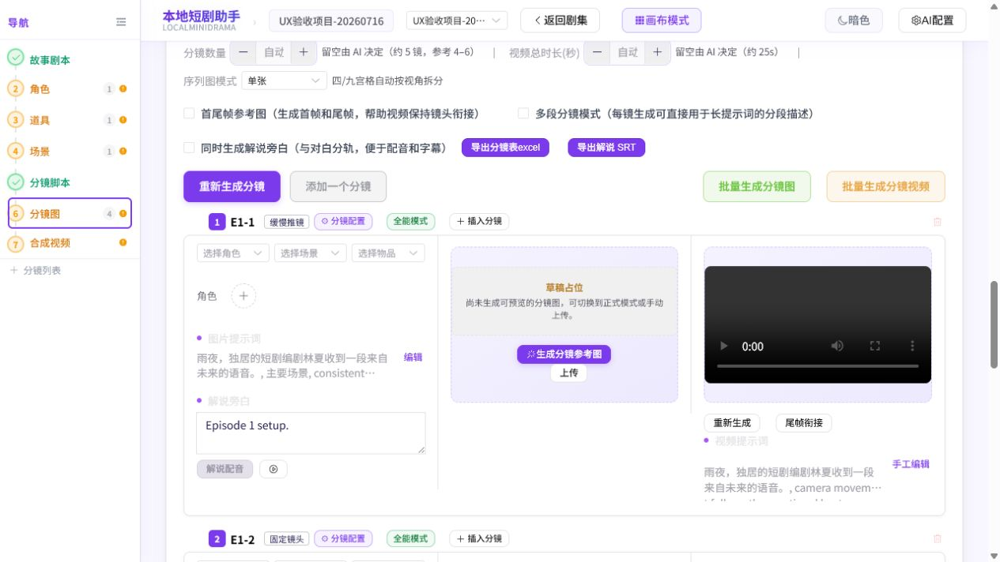
分镜媒体与合成前置
说明性草稿占位不会伪装成完成媒体；图片、视频、尾帧衔接和批量命令保持在同一分镜上下文，合成前明确显示完成覆盖率。

跨项目参考图复用
说明性选择器展示挂载目标、来源项目、类型兼容性和确认状态；长文件名可悬停查看全文，嵌套弹窗支持 Esc 逐级关闭并将焦点还给触发按钮。

导航失败恢复
说明性未知路由不再留下空白或损坏工作台，用户可以返回上一页或直接回到项目列表。

素材加载反馈
说明性加载期间明确显示进度、设置忙碌状态并禁用确认，旧请求不会覆盖当前查询。

素材失败恢复
说明性网络故障只显示安全、可执行的页内中文提示，不泄漏底层错误或重复 Toast；服务恢复后可原位重试。

紧凑桌面视口
说明性历史截图用于说明 1366×768 下弹窗、筛选、空态和底部动作的布局，以及中文项目视频请求场景；它不证明当前提交的溢出或网络结果。

项目导入失败恢复
说明性无效项目包保留安全文件名与明确原因，用户可以重新选择或关闭提示；测试文件只存在于内存，未接触用户文件。

长名称键盘提示
说明性键盘聚焦素材项时显示完整文件名提示，提示框限制在视口内；焦点环与操作目标清晰分离，没有用截断文本代替可访问名称。

重试恢复成功
说明性服务恢复后原位重试重新显示素材，搜索框已清空，错误计数与重复 Toast 均为零，确认动作按选择状态保持禁用。

中文路径视频媒体
说明性历史截图仅说明中文项目路径 MP4、范围响应和浏览器媒体状态的检查场景；当前提交是否完整播放必须由同一提交的 machine artifact 证明。

素材筛选空态
说明性输入不会命中的素材名称后，页面明确显示当前筛选下没有素材，同时提供清除筛选和前往素材中心上传两个可执行动作；截图来自本轮浏览器验收。

素材中心承接
说明性空素材中心同时提供上传素材、新建项目后导入网页 URL 和返回项目首页；从制作台进入时保留安全 returnTo 参数，职责边界对用户可见。
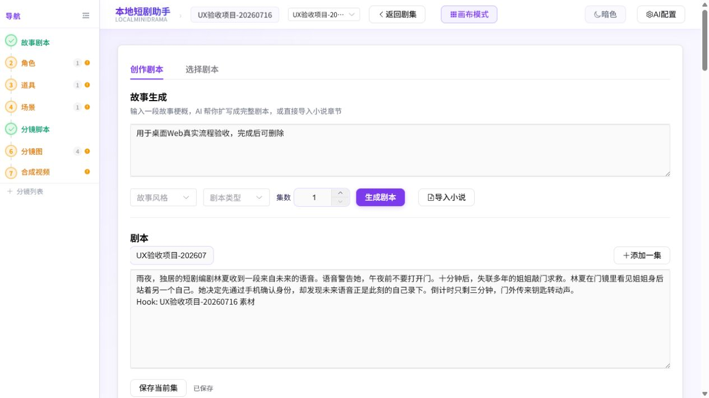
安全返回制作台
说明性点击返回制作台后恢复原项目、原集数和分镜页面，没有落到首页或丢失上下文；弹窗与长文本在当前桌面视口内无重叠。
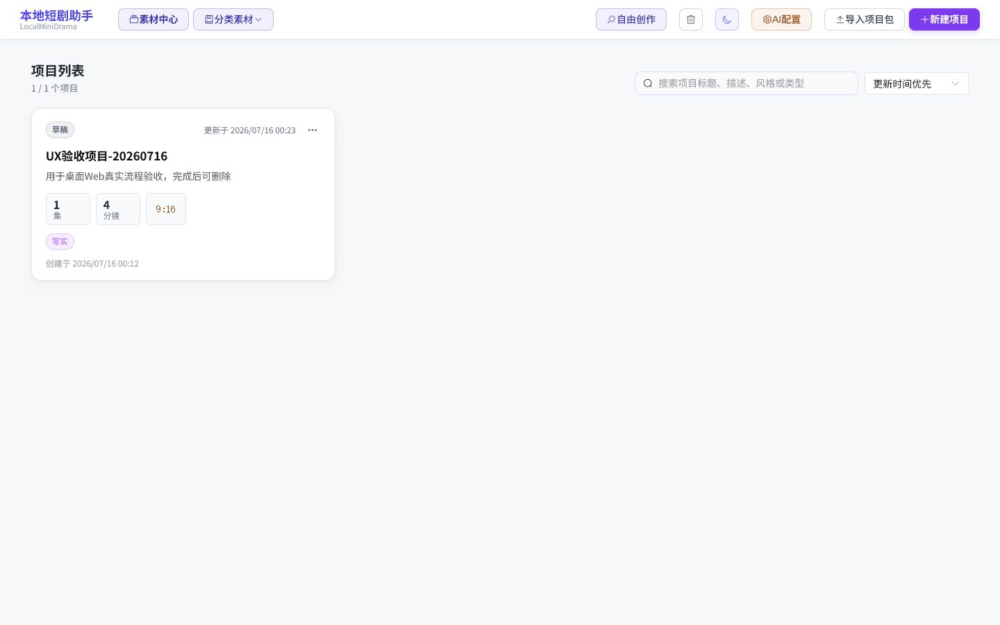
项目视觉入口
说明性项目卡片优先使用真实分镜画面，缺失时显示明确占位；状态、集数、分镜数和“继续制作”按固定层级排列，减少扫描成本。
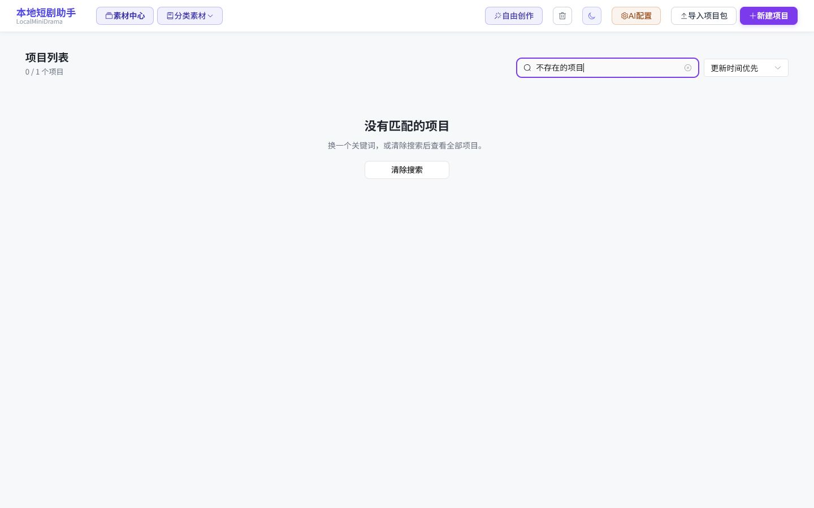
项目筛选恢复
说明性关键词或状态没有匹配项时保留当前上下文，并提供单一清除筛选动作；不会把“没有项目”和“筛选无结果”混为一谈。
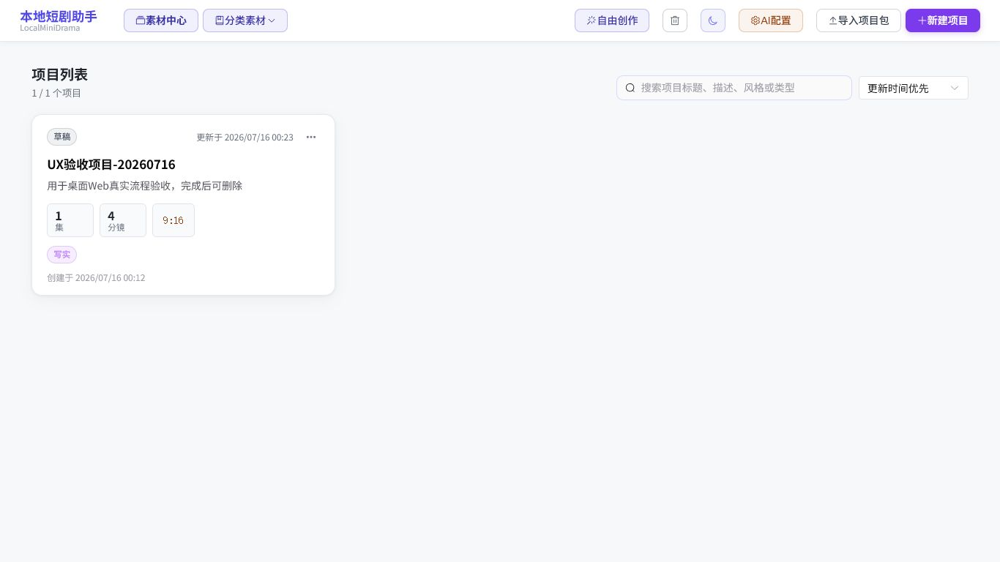
紧凑桌面项目列表
说明性1366×768 下项目标题、搜索、状态、排序和卡片操作均保持可见；DOM 尺寸检查确认页面宽度不超过视口。
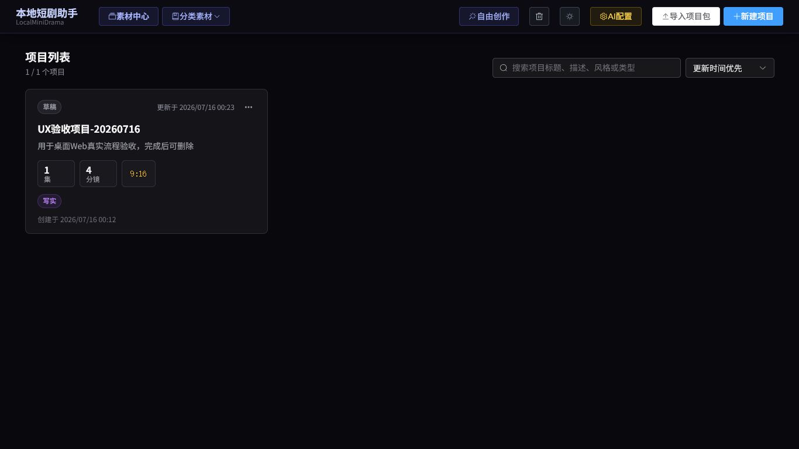
暗色主题层级
说明性暗色主题下封面占位、状态标签、统计信息和键盘焦点仍有清晰层级；主题切换不会改变筛选或路由状态。
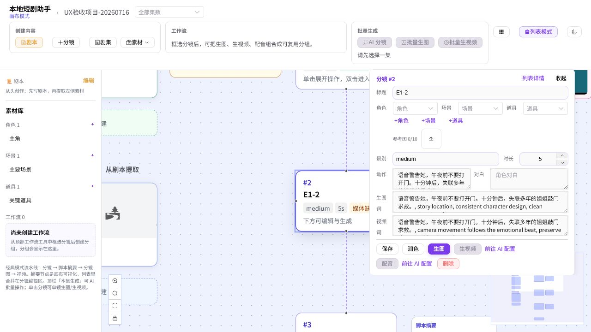
画布检查器浅色主题
说明性分镜编辑器通过 Teleport 固定在右侧检查器区域，限高并独立滚动；脱离画布节点 CSS 作用域后仍继承浅色主题 token，下一节点保持可见可操作。
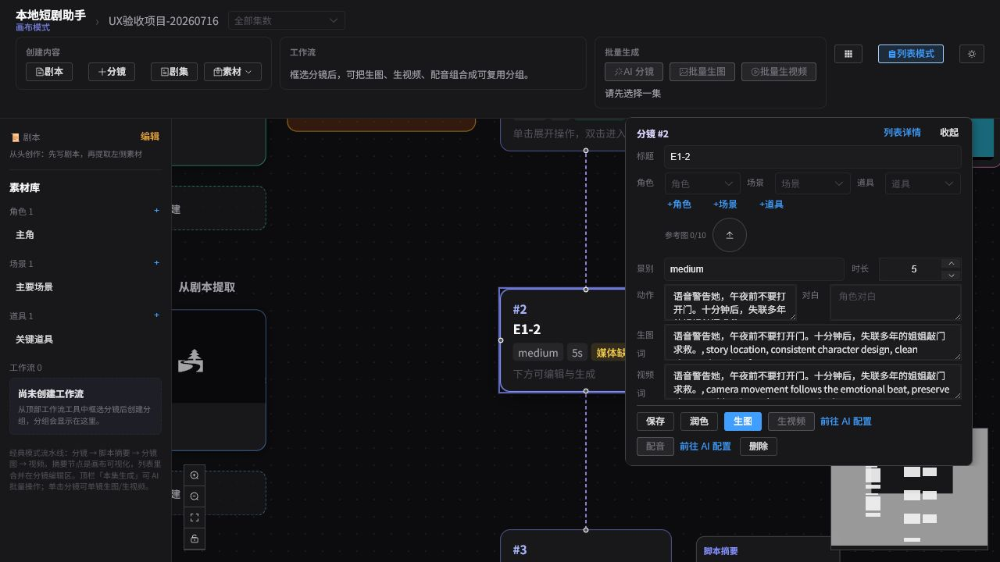
画布检查器深色主题
说明性深色主题下检查器、输入控件、操作按钮和画布节点保持一致的表面层级、文本对比和焦点状态；面板内容超出视口时仅检查器内部滚动。
项目列表层级
说明性筛选、状态、排序和分页由服务端统一处理，URL 保留当前查询；项目卡片继续使用稳定尺寸，不因封面缺失或状态变化产生布局跳动。
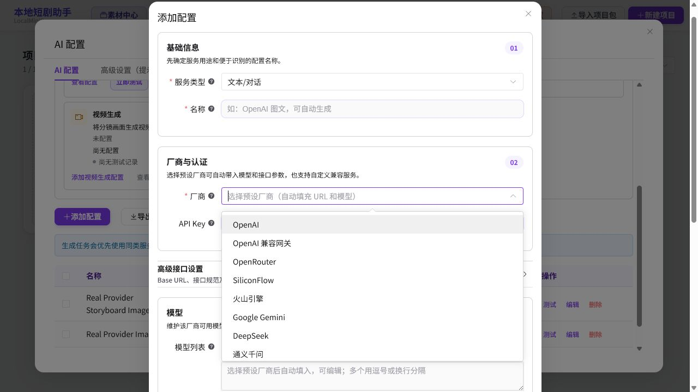
更多厂商与模型
说明性文本、素材图、分镜图、视频和 TTS 分类型提供厂商预设、模型预设与自定义兼容入口；高级接口设置默认收起，首屏先完成服务类型、名称和厂商选择。
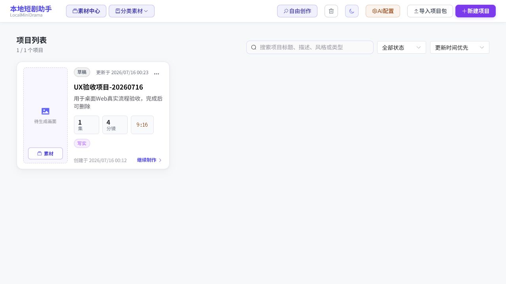
项目级素材入口
说明性素材入口与继续制作、项目菜单互不嵌套，鼠标和键盘均可直接进入该项目的素材来源流程，并保留安全的项目列表返回上下文。
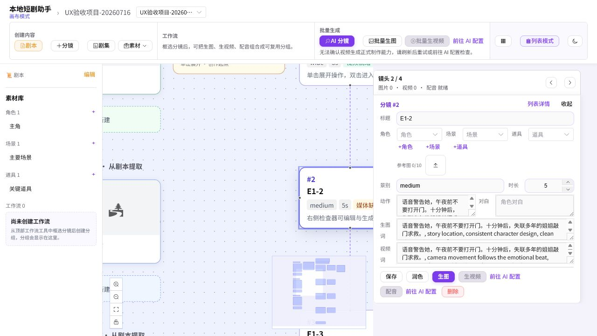
画布镜头检查
说明性检查器显示当前镜头序号、真实可用的图片/视频/配音摘要和前后镜头按钮；切换镜头沿用未保存草稿保护，检查器与小地图在 1280 宽度下不重叠。
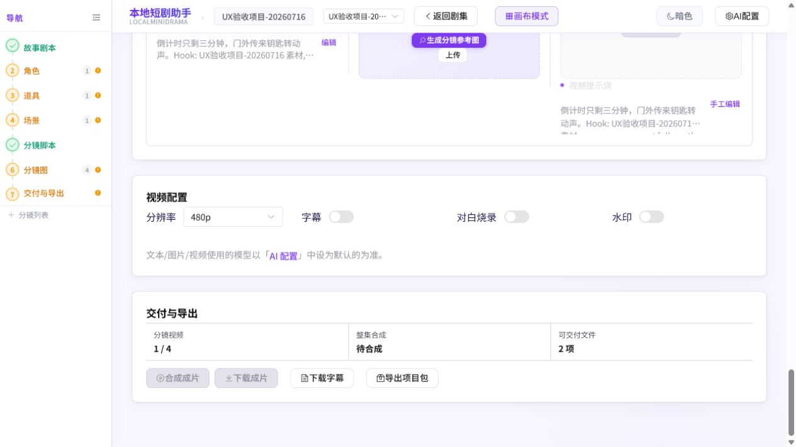
交付与导出
说明性最终步骤统一显示分镜视频覆盖、整集合成和可交付文件数量；成片、字幕和项目 ZIP 均在文件内容通过验证后才报告成功。
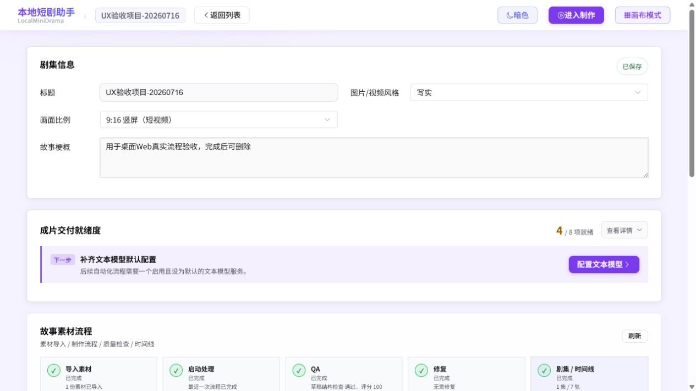
紧凑项目就绪度
说明性这张 1265×712 tracked 图片用于说明诊断折叠、分数和下一步的层级，不是最终 1280×720 原始 viewport 证据。
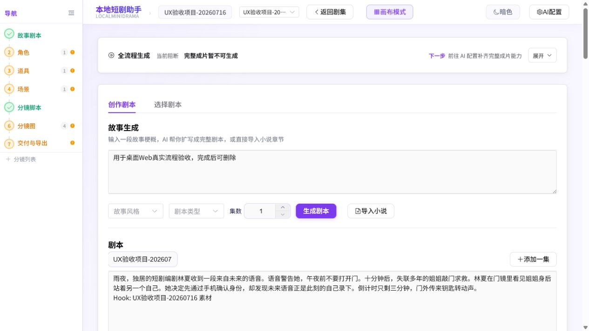
紧凑制作流水线
说明性这张 1265×712 tracked 图片用于说明空闲流水线的紧凑层级，不是最终 1280×720 原始 viewport 证据。
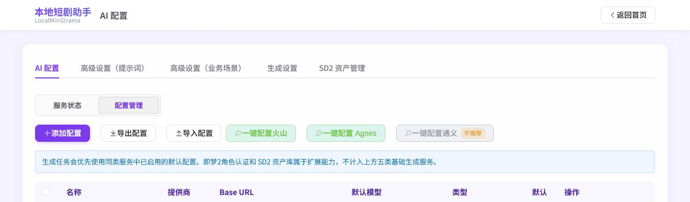
AI 配置工作区
说明性这张 1280×376 tracked 裁剪图用于说明双工作区与操作栏，并止于表头；它不包含 Provider 地址或凭据，也不是最终完整 viewport 证据。
质量与运行证据
| 门禁 | 结果 | 证据 |
|---|---|---|
| 后端 | 机器证据 | 源码检查、流程审计、ZIP/凭据/备份边界和静态媒体行为以最终提交的验证日志为准，本页不保留可过期的测试计数。 |
| 前端 | 机器证据 | 请求竞态、错误提示、工作区键盘契约、离开保护、桌面无障碍、生产构建和包体预算由最终提交的前端验证记录判定。 |
| 桌面 | 机器证据 | Electron 生命周期、原生 ABI、URL 安全和媒体工具信任由同一提交的桌面验证记录判定；Authenticode 仍属延期范围。 |
| Docker | 机器证据 | Node 20 镜像边界、容器验证、运行时净化、镜像 revision 和镜像安全结果必须来自最终提交重新构建的 artifacts。 |
| 生产 E2E | 机器证据 | UI 创建、制作、媒体、下载、导出和清理闭环由 ignored evidence 与 acceptance manifest 记录，并须与最终提交完全一致。 |
| 备份与回滚 | 机器证据 | 隔离恢复、SQLite 完整性、凭据排除和回滚副本由最终提交的演练记录判定；正式升级仍须建立仓库外真实回退检查点。 |
| 依赖安全 | 机器证据 | 生产依赖审计和秘密扫描须在最终提交上重新运行，并以该次运行的结构化结果为准。 |
| 发布制品 | 远端门禁 | Setup、Portable、Unpacked ZIP、SBOM、媒体工具元数据和发布清单由 Release workflow 生成后执行离线复核。 |
| 制品安全 | 远端门禁 | Docker 与 Windows 制品须通过同一提交的 Gitleaks、Trivy、Defender、Electron Fuse 和校验和门禁。 |
本轮关键收口
用户体验
- 移除“微信我”，减少无关入口。
- 扩展 AI 厂商、协议和模型配置。
- 自由创作与项目工作流按服务就绪度阻断。
- 画布最低可读缩放、聚焦、返回上下文和列表模式收口。
- 项目列表增加真实视觉封面、状态筛选、稳定统计层级和直达制作工作台的继续入口。
- 画布分镜编辑增加未保存草稿指纹、关闭/列表/切换节点确认；批量导入等待父层异步保存完成。
- 素材上传、解析和工作流启动期间保留浏览器离开保护，完成后自动解除。
- AI 配置弹窗固定标题与 Tab，内容唯一滚动；测试操作具备 loading、禁用和可访问名称。
- 项目就绪度与全流程生成默认紧凑，只保留分数、当前阻断和唯一下一步；运行中任务会自动展开完整控制。
- AI 配置拆分“服务状态 / 配置管理”，服务直达与键盘左右导航都落在正确工作区。
- 核心界面统一为中文生产术语。
安全与发布
- Provider URL、endpoint、settings 和导出凭据脱敏。
- ZIP 条目数在完整 materialize 前限制，覆盖 ZIP64。
- AI 默认配置由唯一索引和写事务保证。
- Release 构建禁止自动发布，制品复验后才创建草稿。
- FFmpeg 使用固定可信摘要，备份默认排除 Provider 凭据。
- 回滚检查点改为白名单配置脱敏归档，恢复前严格校验凭据排除声明，恢复后要求重新配置并测试。
- Trivy 读取四份 SBOM 并扫描三份真实 Dockerfile；后端绑定目录启动降权例外有明确范围并于 2027-07-17 到期复审。
无障碍与证据边界
tracked 审查关注点
- 项目卡片键盘入口、弹窗焦点和画布面板聚焦。
- 模式控件、状态提示、错误提示和关键按钮的可访问名称。
- 项目视觉封面失败时降级到带语义的占位，不显示破损图片图标；筛选无结果提供可恢复空态。
- 桌面 viewport、横向溢出、成片与分镜视频的加载、解码和播放须由最终机器 E2E 重新证明。
证据限制
- 截图不能单独证明完整屏幕阅读器兼容；结论结合自动化语义契约。
- 真实云 Provider 的计费、限流和长耗时行为按范围后置。
- 恢复后不会携带密钥，管理员必须重新录入并执行连接测试。
- GitHub CI 是推送后的远端独立复验；机器发布结论以同一源码提交的安全证据、manifest 和离线校验为准。